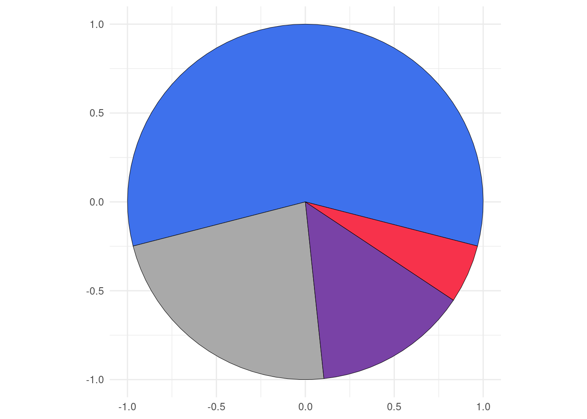

{ggtricks} package is a collection of multiple geom presenting data in the form of circle (for now, but many more to come and not just circle oriented.) using grammar of graphics philosophy and Cartesian coordinates system.
You have a lot of functions to make sector charts where circle is split along its circumference, therefore each section is proportional to value it represents.
-
geom_piePie charts -
geom_donutDonut charts (Pie chart with a hole) -
geom_slicePart of Pie charts -
geom_donut_slicePart of Donut charts
You also have a function, geom_series_circles() to plot what I call series of circles, which draws for a category as many circles and fraction of circles as needed to represent the value represented by that category. A companion function geom_series_text is defined to put labels at the boundary of series circles because calculating these boundary positions can be tedious depending on the starting angle of the fragments of circles.
Installation
You can install the stable version of ggtricks like so:
install.packages("ggtricks")or the developpement version:
devtools::install_github("abdoulma/ggtricks")Examples
geom_series_circles
- Basic Example
library(tidyverse)
library(ggtricks)
my_theme <- function(...) {
theme_minimal() +
theme(
text = element_text(family = "Atkinson Hyperlegible"),
axis.text.y = element_text(color = "black", size = rel(1.5))
)
}
prod_df <- data.frame(
good = c("Potatoes", "Sugar", "Butter", "Coffee", "Rice", "Eggs", "Flour", "Tea", "Milk"),
index = c(606, 485, 204, 165, 215, 268, 267, 137, 194)
)
prod_df <- prod_df |>
mutate(
index = index / 100,
good = fct_rev(fct_inorder(good))
)
prod_df |>
ggplot() +
geom_series_circles(aes(index, good), color = "white") +
coord_equal() +
my_theme()
Of course, there is a fill mapping argument to drive each category filling color.
prod_df |>
ggplot() +
geom_series_circles(aes(index, good, fill = good), color = "black", linewidth = 2.5) +
coord_equal() +
my_theme()Of course, you can choose, to customize the categories labels by setting axis.text in theme_*() function. But the need may come to add labels at series of circles boundary positions. There comes geom_series_text() function.
prod_df |>
ggplot() +
geom_series_circles(aes(index, good, fill = good), color = "black", linewidth = 2.5) +
geom_series_text(aes(index, good, label = index), size = 6, family = "Atkinson Hyperlegible") +
coord_equal(clip = "off") +
guides(
fill = "none",
) +
my_theme()
You can set init_angle to define fragment of circle starting angle.
index_df <- tribble(
~article, ~index,
"Plate beef", 187,
"Bacon", 215,
"Lard", 266
)
index_df <- index_df |>
mutate(
index = index / 100
)
index_df |>
ggplot() +
geom_series_circles(aes(index, article),
init_angle = 45
# init_angle = 90
# init_angle = 145
# init_angle = 180
) +
coord_equal() +
theme_minimal()Series of circles Init angles
- Two series of circles combination
Let’s illustrate a use of the combination of two series of circles with another example from Charts And Graphs (An introduction to graphics methods in control and analysis of statistics) by KARL G. KARSTEN, B.A.
usa_trades <- tribble(
~country, ~with_foreign, ~with_us,
"United States", 13359, 13359,
"United Kingdom", 15925, 3123,
"Canada", 2304, 1256,
"France", 7429, 1686,
"Italy", 4189, 1516,
"Netherlands", 2639, 316,
"Japan", 2421, 1420,
"Germany", 4966, 577
)
usa_trades <- usa_trades |>
mutate(
country = fct_rev(fct_inorder(country)),
across(.cols = contains("with"), \(x) x / 1e3, .names = "{.col}")
) |>
arrange(country) |>
mutate(
row_num = row_number()
)
n_rows <- nrow(usa_trades)
usa_trades |>
ggplot() +
geom_series_circles(aes(with_foreign, country), fill = "white", color = "black", linewidth = 2) +
geom_series_circles(aes(with_us, country)) +
geom_text(aes(y = row_num, label = scales::comma(with_us)), x = -1, family = "Atkinson Hyperlegible", hjust = 1) +
geom_text(aes(y = row_num, label = scales::comma(with_foreign)), x = -2, family = "Atkinson Hyperlegible", hjust = 1) +
geom_text(aes(y = row_num, label = country), x = -3.5, family = "Atkinson Hyperlegible", fontface = "bold", hjust = 1) +
annotate(geom = "text", x = -1, y = n_rows + 1, label = "Trade\n with\n U.S.", family = "Atkinson Hyperlegible", hjust = 1) +
annotate(geom = "text", x = -2, y = n_rows + 1, label = "Total\n Foreign\n Trade", family = "Atkinson Hyperlegible", hjust = 1) +
annotate(geom = "text", x = 8, y = n_rows + 1, label = "(Millions of Dollars)", family = "Atkinson Hyperlegible") +
scale_x_continuous(
limits = c(-5, 14)
) +
coord_equal(clip = "off") +
theme_minimal() +
theme(
axis.text = element_blank(),
axis.title = element_blank(),
panel.grid = element_blank(),
plot.background = element_rect(fill = "white", color = NA)
)Series of circles combination
geom_pie
init_angle
As with geom_series_circles(), you can set the init angle parameter to set the starting angle of your pie (here the pie, but it is also available for donut, slice and donut_slice.)
my_df <- data.frame(
cat = paste0("Prod ", 1:4),
val = c(87, 34, 21, 8)
)
categories_fills <- c(
"Prod 1" = "#3E71EC",
"Prod 2" = "#A9A9A9",
"Prod 3" = "#7942A6",
"Prod 4" = "#F7324B"
)
my_df |>
ggplot() +
geom_pie(aes(cat = cat, val = val, fill = cat),
init_angle = 0
# init_angle = 60,
# init_angle = 120,
# init_angle = 180
) +
coord_equal() +
scale_fill_manual(
values = categories_fills
) +
theme_minimal()
-
spotlight_max&spotlight_position
If you want the category with the max value to determine the slices positions, you can set the spotlight_max parameter to true. Then the category with the max value will be placed at spotlight_position (by default top, others possible values are: right, bottom and left.)
my_df |>
ggplot() +
geom_pie(aes(cat = cat, val = val),
spotlight_max = TRUE,
spotlight_position = "top",
# spotlight_position = "right"
# spotlight_position = "bottom"
# spotlight_position = "left"
) +
coord_equal() +
scale_fill_manual(
values = categories_fills
) +
theme_minimal()
Spotlight max positions
spotlight_cat
Maybe, you want a specific category to drive the slices positions rather than the category with the maximum value ? Then come the spotlight_cat parameter to define the driving category. Also here you can combine the spotlight_cat parameter value with spotlight_position to specify its position.
my_df |>
ggplot() +
geom_pie(aes(cat = cat, val = val, fill = cat),
spotlight_cat = "Prod 1",
spotlight_position = "top"
) +
coord_equal() +
scale_fill_manual(
values = categories_fills,
guide = "none"
) +
theme_minimal()
labels
As I know that it can be difficult to know the coordinates of the center positions of the category slices, I define a default label mapping which will place the provided labels at this position. When label mapping is defined, you can define labels_with_tick parameter to TRUE to add tick mark at the centers positions of the slices.
my_df |>
ggplot() +
geom_pie(
aes(cat = cat, val = val, fill = cat, label = cat)
# labels_with_ticks = TRUE
) +
coord_equal() +
scale_fill_manual(
values = categories_fills,
guide = "none"
) +
theme_minimal()
Labels with(out) ticks
geom_donut
Donut is just pie with a hole in it. There are two parameters r1 and r2 to define thickness of the donut.
my_df |>
ggplot() +
geom_donut(aes(cat = cat, val = val, fill = cat),
r1 = 1, r2 = .65
# r1 = 1 , r2 = .35
) +
coord_equal() +
scale_fill_manual(
values = categories_fills,
guide = "none"
) +
theme_minimal()All others parameters available for geom_pie are available also here.
geom_slice
It is a portion of pie, by default a half (180 deg). You can set the slice_angle portion as needed.
my_df |>
ggplot() +
geom_slice(aes(cat = cat, val = val, fill = cat),
slice_angle = 180 # ,
# slice_angle = 120
) +
coord_equal() +
scale_fill_manual(
values = categories_fills,
guide = "none"
) +
theme_minimal()
Slices plots with different angles
Also here, you can set the starting angle position with init_angle. Note here that there are no spotlight_max, spotlight_cat parameters, since we are not drawing a complete circle (but theoretically you can, if you set slice_angle to 360, which means a pie.)
my_df |>
ggplot() +
geom_slice(aes(cat = cat, val = val, fill = cat),
init_angle = 30 # ,
# init_angle = 90
) +
coord_equal() +
scale_fill_manual(
values = categories_fills,
guide = "none"
) +
theme_minimal()Slice plots with different init angles
You can however set the slice position with slice_position(possible values are: top, right, bottom, and left). Soon, I will post more detailed examples on the package website: https://abdoulma.github.io/ggtricks/.
geom_donut_slice
It is a slice of donut plot. As a geom_donut, it is driven by 2 radii and as a slice plot, it has a defined slice angle.
my_df |>
ggplot() +
geom_donut_slice(aes(cat = cat, val = val, fill = cat),
r1 = 1, r2 = .65
# r1 = 1, r2 = .35,
# slice_angle = 90
# slice_angle = 120
# slice_angle = 180
) +
coord_equal() +
scale_fill_manual(
values = categories_fills,
guide = "none"
) +
theme_minimal()
Donut slice plots with different angles
geom_slice_donut also has special parameter link_with_origin, if you want to connect the donut slice boundaries with origin.
my_df |>
ggplot() +
geom_donut_slice(aes(cat = cat, val = val, fill = cat),
r1 = 1, r2 = .65,
slice_angle = 120,
slice_position = "top",
link_with_origin = TRUE
) +
coord_equal(clip = "off") +
scale_fill_manual(
values = categories_fills,
guide = "none"
) +
theme_minimal()Limitations
As you might have noticed, to generate circle, I use coord_equal(), using coord_cartesian() will zoom the plot, not generating a appealing circle shape even if the underlying drawn plot is a circle. So, we fix, the aspect ratio to force :
the physical representation of data units on the axes.
according to the official documentation. Of course, you shouldn’t edit the default ratio = 1 that ensures that one unit on x-axis is the same length as one unit on the y-axis.
When using geom_series_circles(), the desire will come one day to combine it with facet_wrap() or facet_grid or any faceting function, you should not, or not the way you envision.
Since we are using coord_equal(), you won’t be able to set scales parameter, which I strongly suspect you to try to do. So for the moment, I advise you not to do so. However, I will provide some tips to go through those restrictions on package website https://abdoulma.github.io/ggtricks/
Roadmap
In the coming weeks, additional features will be added to current geoms:
- Detach spotlighted category
- Variate radii for the representation of categories
- Label displaying in mapping (choose categories we want to display)
- Special key draw for pie and slice and another one for
donutanddonut_slice.
As announced at start, I am not limiting the package to sector charts, so additional geom styles will be added, and if you have suppositions, fee free to open an issue, I am open to all contributions.